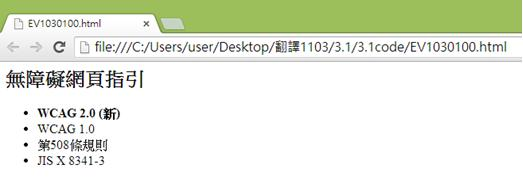
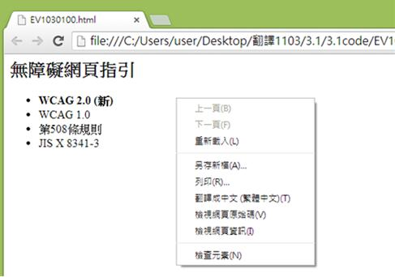
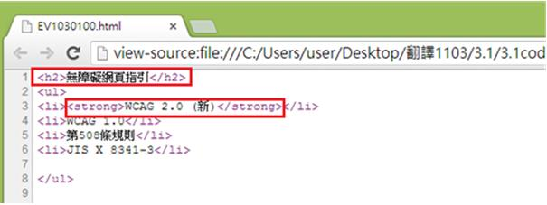

無障礙規範2.0版導覽
原則一：可感知
資訊及使用者介面元件應以使用者能察覺之方式呈現使用者一定要能察覺呈現出來的資訊（也就是資訊不能對使用者所有的感官均無形）
指引 1.1 - 替代文字
為任何非文字的內容提供相等意義的替代文字，使這些內容能依人們的需求，轉變成大字版、點字、語音、符號或簡化過的語言等不同型態
1.1.1 Non-text Content (Level A)
如果非文字的內容是個控制元件或接受使用者輸入的元件，那麼它就會有個用來描述其目的的名稱。
Inspection rule
如果img標籤中存在alt屬性，通過檢測，否則檢測失敗。
Inspection code example
<img src="screen01.png" alt="從「記事本」的「檔案」選單裡選擇「另存新檔」" />
Inspection rule
若<area>標籤內存在alt且值不為空，則通過檢測。
Inspection code example
<img src="screen01.png" usemap="#map1" alt="彈出的對話窗有兩個按鈕" />
<map id="map1" name="map1">
<area shape="rect" coords="0,0,30,30" href="okbutton.html" alt="確定" />
<area shape="rect" coords="34,34,100,100" href="cancelbutton.html" alt="取消" />
</map>
Inspection rule
若<img>標籤內longdesc存在有效之URI且src具有此圖片的來源，則通過檢測。
Inspection code example
<img longdesc="thispage.html#desc" alt="每一張圖片的描述" src="http://www.company/images/graph.png">
<div id="desc">
<h3>長敘述: 圖片敘述</h3>
<!-- 圖片完整的敘述 -->
<p>結束長敘述</p>
<div>
Inspection rule
如果標籤中有引用字符圖案、表情符號、其他挪用文字外型做為表意功能的內容，其標籤存在title屬性且不為空值，通過檢測，否則檢測失敗。
Inspection code example - 1
<abbr title="中華民國國家標準">=CNS</abbr>
Inspection code example - 2
<a href="#skipasciiart">Skip 跳過字符圖案</a>
<pre title="谷歌">
___
/ __| ___ ___ __ _ |||___
| ( ___ / _ \/ _ \/ _`||| -_)
\____)|\___/\___/\__,|||___/
|___/
</pre>
<p><a name="skipasciiart"></a></p>
Inspection rule
如果型別為圖片(type="image")的<input>標籤按鈕，標籤內的alt屬性存在且不為空值，通過檢測，否則檢測失敗。
Inspection code example
<form action="http://example.com/prog/text-read" method="post">
<input type="image" name="submit" src="submit.png" alt="送出" />
</form>
如果非文字的內容是個時序媒體，那麼替代文字至少要為此非文字內容提供描述性的識別資訊。
Inspection rule
若物件組件未提供替代文字、替代物件或替代媒體說明，則無法通過檢測。
Inspection code example - 1
<object>
<object>
<img alt="剎那間的真相：小王打了個盹！" />
你也可以下載MP4格式的影片：
<a href="truth.mp4">剎那間的真相</a>
</object>
</object>
Inspection code example - 2
<embed src="../movies/history_of_rome.mov" height="60" width="144" autostart="false">
<noembed>
<a href="../transcripts/transcript_history_rome.htm">Transcript of "The history of Rome"</a>
</noembed>
</embed>
Inspection rule
若<img>標籤內存在值為空的alt屬性且不存在title屬性，則通過檢測。
Inspection code example
<img src="squiggle.gif" width="20" height="20" alt="" />
如果非文字的內容是個控制元件或接受使用者輸入的元件，那麼它就會有個用來描述其目的的名稱。
Evaluation rule
在HTML或XHTML中，若需使圖片加上有意義、可代替圖片在文件中的功能及內容的替代文字時，都必須要遵守此規範。
Evaluation example
開啟，並搭配Firefox中外掛擴充元件「Firefox Accessibility Extension」。

點選選單列中的Accessibility→Text Equivalents→Show Text Equivalents 來顯示此圖片的替代文字。

Evaluation rule
在HTML或XHTML中，若在一組連續的圖片中，只有一個圖片項目用替代文字來描述該組圖片的所有項目時，都必須要遵守此規範。
Evaluation example
1.開啟，並搭配Firefox中外掛擴充元件「Firefox Accessibility Extension」。

2.點選選單列中的Accessibility→Text Equivalents→Show Text Equivalents 來顯示此圖片的替代文字。

3.點選網頁右鍵”檢視原始碼”。

4.可以對照程式碼中，我們可以看到只有第一張圖(mg src="w3c1.png") 有替代文字(alt="這是w3c網站")，其他圖片項目都沒有替代文字(alt)。

Evaluation rule
提供影像地圖區域的替代文字，並要能確實表達這些地圖區域的功能與目的
Evaluation example
1.使用Firefox搭配「Firefox Accessibility Extension」顯示替代文字（Accessibility→Text Equivalents→Show Text Equivalents）

2.檢查所有的替代文字是否與其圖片區域原本要表達的功能及意義吻合，必要的時候並參考區域的鏈結目的地來驗證

Evaluation rule
任何運用HTML或XHTML替代文字的網頁，都必須要遵守此規範。
Evaluation example
1. 使用Google Chrome瀏覽器，點選滑鼠右鍵，開啟「檢視原始碼」。

2. 檢查是否有利用長描述提供更詳盡的說明網頁網址。

Evaluation rule
表情符號或ASCII藝術字可能為任何字元湊成的形狀，故主要用觀察法評鑑。
Evaluation example
1.先判斷出在網頁上由字元湊成的表情符號或ASCII藝術字。

2.接著檢查在表情符號的前後方必須要有等同於符號所要表達意義之文字說明。

Evaluation rule
圖片以外的輔助說明，包含表情符號或動畫或影片皆可以此方式檢測。
Evaluation example
1.先判斷出在網頁上由字元湊成的表情符號或ASCII藝術字。

2.用程式碼修改的方式，移除字元表情符號，結果呈現如下。

3.用程式碼修改的方式，以相等意義之文字取代，結果呈現如下。

Evaluation rule
任何運用HTML或XHTML表單元件技術的網頁，都必須要遵守此指引。
Evaluation example
1.網頁上按右鍵->檢視網頁原始碼。

2.檢查input標籤的type屬性是否為“image”(圖片檔)，並檢查是否存在alt屬性，用來表示以圖片做為按鈕的功能。此範例alt屬性表示傳送按鈕，點擊圖片按鈕後會將頁面轉換到所指定的網頁位址。

如果非文字的內容是個時序媒體，那麼替代文字至少要為此非文字內容提供描述性的識別資訊。
Evaluation rule
網頁上需有提供現場即時影像或音訊，都必須要遵守此規範。
Evaluation example
1. 網頁上刪除或隱藏冗長的文字敘述，只需要用簡短的文字來描述。以下範例為高速公路實況資訊，可看出只以簡短的文字內容來描述此影片。

2. 檢查影像是否正確的顯示出來。

如果非文字的內容改以文字呈現即會導致測驗或習題無效，那麼替代文字至少要為此非文字內容提供描述性的識別資訊。
Evaluation rule
任何使用Object標籤的網頁，都應該都必須要遵守此規範。
Evaluation example
1. 檢查網頁原始碼，找出使用Object標籤的地方。

2.檢查是否在Object標籤的Body裡，填寫描述Object的替代文字，且符合Object的內容

3.或是利用其他方式(例如巢狀Object結構)，顯示替代圖片
<body>
下面是一個Object標籤，且在Object的Body裡有填寫替代文字
<br> <br>
<object code="JavaDemo.class">
Hello, this is a program for Java Applet!
</object>
</body>
如果非文字的內容主要是為了創造特定的知覺體驗，那麼替代文字至少要為此非文字內容提供描述性的識別資訊。
Evaluation rule
任何使用虛擬實境、立體成像、或環場空間的網頁都必須要符合此規範。
Evaluation example
1.範例故宮博物館的【非看不可互動桌】就是立體影像。

2.第2人生遊戲網頁中的虛擬實境。

如果非文字的內容，是為了要確認取用內容的是人而非電腦，那麼首先要以替代文字來指出及描述此非文字內容的目的，接著還要提供替代的CAPTCHA驗證，採不同感官感知類型的輸出模式，以顧及不同的障礙。
Evaluation rule
任何使用CAPTCHA驗證的網頁都必須要符合此規範。
Evaluation example
1.在需要輸入驗證碼的網頁，於"驗證碼"的欄位以滑鼠右鍵開啟「檢查元素」

2.在「檢測元素」中確認驗證碼的圖形文字為「驗證碼」，並有提供語音播放的替代方式

Evaluation rule
任何使用CAPTCHA驗證的網頁都必須要符合此規範。
Evaluation example
1.以高鐵訂票系統為例，有圖形和聲音的驗證方式。

2. 可以透過「圖形」或「聲音」方式得知並正確輸入驗證碼，即可通過驗證

如果非文字的內容完全只有裝飾作用、僅用於視覺格式排版、或根本不會呈現在使用者面前，那麼就要用輔助科技能加以忽略的方式來實踐。
Evaluation rule
網頁上有應當被輔助科技忽略的圖片，都必須要遵守此規範。
Evaluation example
1. 開啟檔案，使用Firefox中的外掛擴充元件Firefox Accessibility Extension。

2. 點選選單列中的Accessibility→Text Equivalents→Show Text Equivalents來顯示此圖片的替代文字，而此處使用空字串當它的替代文字，所以會顯示為空白。

3. 檢視原始碼，alt為使用替代文字部分，此處為空字串，且規範規定不可使用標題屬性(title)，故此處沒有使用title。

Evaluation rule
任何在HTML或XHTML的網頁內，任何裝飾性的圖片或是背景圖片都必須透過CSS來置入。
Evaluation example
1. 使用Google Chrome瀏覽器，點選滑鼠右鍵開啟「檢視原始碼」。

2. 檢查裝飾性圖片是否有用css方式置入。

Evaluation rule
任何在HTML或XHTML的網頁必須使用CSS方塊模型來設計版面，不要用佔位圖片來控制物件的間距。
Evaluation example
1. 使用Google Chrome瀏覽器，點選滑鼠右鍵開啟「檢視原始碼」。

2. 檢查項目內容是否有用CSS方塊模型來處理版面

指引 1.2 - 時序媒體
針對時序媒體提供替代內容
1.2.1 Audio-only and Video-only (Level A)
除非音訊及視訊是文字內容的替代媒體，並且有明確地標示出來，否則就應該做到下列事項：
1. 預先錄製的純音訊：提供時序媒體的替代內容來表達純音訊內容的等義資訊。
2. 預先錄製的純視訊：提供時序媒體的替代內容或替代音軌來表達純視訊內容的等義資訊。
Evaluation rule
有時序媒體替代內容(此針對純音訊內容)的網頁，皆須遵守此規範。
Evaluation example
1.打開檔案，此處設為純音訊內容的影片(此以”洗手教學為範例”)，下方有影片內容敘述。

2. 點選紫色文字部分，即可播放音訊檔(內容為洗手步驟)，此處為純音訊內容。

3. 檢視原始碼。

Evaluation rule
有時序媒體替代內容(此針對純視訊內容)的網頁，皆須遵守此規範。
Evaluation example
1.打開檔案，此處設為純視訊內容的影片(此以”洗手教學為範例”)，下方有影片內容敘述。

2. 檢視原始碼。

Evaluation rule
有提供描述視訊內容之音訊的網站皆須符合此規範。
Evaluation example
1.開啟網頁，此以連結到飛船降落火星的新聞視頻為例，連接到視頻的初始畫面是一個飛船的圖片，而視頻下方有一個關於影片內容的音訊檔案。

2.當點選左圖紅色箭頭的飛船圖片可連接到右圖的飛船降落火星的新聞視頻。

3.而點選紫色字幕的音訊連結可執行一個關於影片內容的音訊檔案。

4.檢視原始碼，紅色框分別為視訊檔案和音訊檔案。

1.2.2 Caption (pre-recorded) (Level A)
除非在同步媒體中，預先錄製的音訊內容是文字內容的替代媒體，並且有明確地標示出來，否則就應該為所有的音訊內容提供字幕。
Evaluation rule
在HTML或XHTML的網頁內，如果有提供預錄製的音訊內容，都需要遵守此規範。
Evaluation example
1. 檢查播放音訊時是否有隱藏式字幕，並且與內容相符合。

2. 或是播放音訊時有非隱藏字幕，並且與內容相符合

1.2.3 Audio Desctiption or Media Alternative (Level A)
除非同步媒體是文字內容的替代媒體，並且有明確地標示出來，否則就應該為這些同步媒體提供替代時序媒體，或預先錄製的視訊內容的音訊描述。
Evaluation rule
有時序媒體替代內容(此針對純音訊內容)的網頁，皆須遵守此規範。
Evaluation example
1.使用Google Chrome瀏覽器，按下右鍵「檢視原始碼」顯示連結。

2.檢查是否有提供在非文字內容後馬上放置連往替代內容的鏈結，並點擊連結來驗證。

Evaluation rule
任何運用HTML或XHTML時序媒體及同步媒體的網頁，都必須要遵守此規範。
Evaluation example
1.使用Google Chrome「檢視原始碼」顯示連結 (按下右鍵→檢視原始碼)。

2. 檢查是否有提供具有音訊描述或額外音訊描述的電影，或提供使用者可選取、且含有音訊描述的第二音軌，並點擊連結來驗證。

Author's note
Evaluation rule
有提供影片的靜態替代文字(例如演講者資訊、演講內容以及演講標題等等)，則通過檢測。
Evaluation example
1.演講的內容

2.演講的標題

1.2.4 Live Caption (Level AA)
為同步媒體中所有的現場音訊內容提供字幕。
Author's note
Evaluation rule
網頁中如果有嵌入即時live多媒體，需要有字幕輔助。
Evaluation example
1. 影片中底下有字幕輔助。

1.2.5 Audio Description (Level AA)
為同步媒體中所有預先錄製的視訊內容提供音訊描述。
Author's note
Evaluation rule
任何用時序媒體及同步媒體的網頁，都必須要遵守此規範。
Evaluation example
1.使用Google Chrome「檢視原始碼」顯示連結 (按下右鍵→檢視原始碼)

2.檢查是否有提供具有音訊描述或額外音訊描述的電影，或提供使用者可選取、且含有音訊描述的第二音軌，並點擊連結來驗證。

1.2.6 Sign Language (Level AAA)
為所有在同步媒體中預先錄製的音訊內容提供手語翻譯。
Evaluation rule
任何用時序媒體及同步媒體的網頁，都必須要遵守此規範。
Evaluation example
1.使用網頁瀏覽器打開，網址https://www.youtube.com/watch?v=dAchb95IC1E中的影片可看到視訊串流中包含手語翻譯。

2.檢查是否有提供手語翻譯的視訊串流，若有即通過驗證。
Evaluation rule
任何用時序媒體及同步媒體的網頁，都必須要遵守此規範。
Evaluation example
1.使用網頁瀏覽器打開，網址https://www.youtube.com/watch?v=dAchb95IC1E中的影片，可看到視訊串流中包含額外疊合於播放視訊中的手語翻譯視訊。
2.檢查是否提供疊合於影像上的手語翻譯於視訊中來通過驗證。
1.2.7 Extend Audo Description(Level AAA)
為所有同步媒體中預先錄製的視訊內容提供具有額外音訊描述的影片。
Author's note
Evaluation rule
任何用時序媒體及同步媒體的網頁，都必須要遵守此規範。
Evaluation example
1.使用QuickTime播放器開啟具有額外音訊的描述電影

2.檢測音訊描述的原始碼

1.2.8 Media Alternative (Level AAA)
為所有預先錄製的同步媒體及所有預先錄製的純視訊媒體，提供時序媒體替代內容。
Author's note
Evaluation rule
任何用時序媒體及同步媒體的網頁，都必須要遵守此規範。
Evaluation example
1.使用Google Chrome「檢視原始碼」顯示連結 (按下右鍵→檢視原始碼)。

2.檢查是否有提供在非文字內容後馬上放置連往替代內容的鏈結，並點擊連結來驗證。

Evaluation rule
所有網頁中提供的純視訊內容都必須遵守此規則
Evaluation example
1.檢查網頁中是否存在純視訊內容的元件。
2.並確認是否存在影片的替代內容。
3.確認影片和替代內容是否相符合。

1.2.9 Audio only live (Level AAA)
為現場純音訊內容提供能表達等義資訊的時序媒體替代內容。
Author's note
Evaluation rule
任何用時序媒體及同步媒體的網頁，都必須要遵守此規範。
Evaluation example
1.使用Google Chrome「檢視原始碼」顯示連結 (按下右鍵→檢視原始碼)。

2.檢查是否提供純音訊檔文字形式的替代內容或現場音訊字幕服務。
3.並在網頁中檢視文字字幕內容是否與音訊檔吻合。
Evaluation rule
當演講開始時，演講內容也會公布在網路上。
Evaluation example
1.網路影片總統正在演講

2.演講內容同時被公布在網路上，並且有頁數連往下一頁講稿

指引 1.3 可調適
針對時序媒體提供替代內容
1.3.1 Info and Relationship (Level A)
由呈現方式所傳達的資訊、結構與關連性要能以程式化的方式判讀，或者有對應的文字。
Author's note
Inspection rule
若每一段落標籤群<p>、…、<p>具有一主題敘述<h1>、<h2>、…、<h6>其一，則通過檢測。
Inspection code example
<h1>水果與植物</h1>
<p>人類吃的植物數量豐富</p>
<p>第二段落</p>
<p>第三段落</p>
<h2>水果</h2>
<p>一個水果是植物的一種構造，是它的種子...</p>
<h3>蘋果</h3>
<p>蘋果是波馬白堊紀蘋果樹的種子...</p>
<h3>橘子</h3>
<p>橘子是一種古代栽培混合型的起源...</p>
Inspection rule
如果表格標籤存在，且其內有超過一組以上內含<th>標籤的<tr>標籤組，則<th>標籤需使用scope屬性或使用id屬性與其他<th>標籤或<td>標籤中的headers屬性建立關聯，通過檢測，否則檢測失敗。
Inspection code example
<table>
<tr>
<th rowspan="2" id="h">作業</th>
<th colspan="3" id="e">考試</th>
</tr>
<tr>
<th id="e1" headers="e">1</th>
<th id="e2" headers="e">2</th>
<th id="ef" headers="e">期末</th>
</tr>
<tr>
<td headers="h">15%</td>
<td headers="e e1">15%</td>
<td headers="e e2">15%</td>
<td headers="e ef">20%</td>
</tr>
</table>
Inspection rule
如果表單中存在群組控制元件的<fieldset>與<legend>標籤，且內容或屬性值不為空值；或<select>標籤中使用分組<optgroup>標籤，通過檢測，否則檢測失敗。
Inspection code example
<!-- Example 1 -->
<fieldset>
<legend>以下為劇本的撰寫名單者：</legend>
<input type="radio" id="shakesp" name="hamlet" checked="checked" value="a">
<label for="shakesp">威廉</label><br />
<input type="radio" id="kipling" name="hamlet" value="b">
</fieldset>
<!-- Example 2 -->
<select id="food" name="food">
<optgroup label="水果">
<option value="1">蘋果</option>
</optgroup>
</select>
Inspection rule
如果表單控制元件及其id屬性存在且id屬性值不為空，並有一或多的標籤組件其內的for屬性值與表單控制元件的id屬性值相互對應，通過檢測，否則檢測失敗。
Inspection code example
<label for="firstname">姓氏:</label>
<input type="text" name="firstnametext" id="firstname" />
Author's note
Evaluation rule
當文字需要以變化性方式呈現(例如：文字以粗體表示)時，須遵守此規範。
Evaluation example
1. 使用Google Chrome瀏覽器開啟檔案 (以css顯示粗體及標題效果)
2. 點選右鍵檢視網頁原始碼。
3. 從程式碼中可以了解到以css來表示的文字效果 ，如下<strong>會將文字改成粗體（即WCAG 2.0 (新)為粗體字），<h2>為設定的標題大小，因此標題無障礙網頁指引也會一般字體大小有所不同。
Author's note
Evaluation rule
使用顏色改變文字時，須遵守此規範。
Evaluation example
1.使用Google Chrome瀏覽器開啟網頁

2.文字顏色：以紅色字體以及字體背景色為黃色為例)點選右鍵檢視網頁原始碼

3.使用顏色改變文字時可以用html中的語意標籤來表示，例如：background-color為文字背景顏色，color可調整文字顏色。下列範例中我們得知從<span style="background-color: YELLOW"> 可將文字背景色設置成黃色 ，<font size="5" color="RED">可將文字設為紅色。

Evaluation rule
以不同資訊結構（例如：當滑鼠移過某處時，會呈現特殊效果來呈現不同訊息）來表示不同訊息的呈現，須遵守此規範。
Evaluation example
1.使用Google Chrome瀏覽器開啟檔案, 滑鼠游標指到”連結1”時會出現背景色會變化成橘色

2.點選右鍵檢視網頁原始碼。

3.從呈現當中抽離資訊與結構，利用onMouseOver與onMouseout進行設定， 當滑鼠指標移到連結時，則會切換成不同的背景色（bgColor）。

Evaluation rule
需要改變文字呈現方式時，且皆須遵守此規範。
Evaluation example
1.使用Google Chrome瀏覽器開啟檔案，確認是否有受css影響文字視覺呈現。(此範例顯示css文字靠右及顯示背景色

2.點選右鍵檢視網頁原始碼。

3.程式碼中我們可以看到以css控制文字視覺呈現，如下 div { background-color:#5f9ea0;｝ 為調整文字區域的背景色，text-align:right為文字靠右。

Evaluation rule
在HTML和XHTML任何有使用巢狀標頭讓文章看起來有段落層次的結構時，且須遵守此規範。
Evaluation example
1.使用Google Chrome瀏覽器開啟檔案

2.點選右鍵檢視網頁原始碼。

3.對照呈現的網頁是不是受巢狀標題<h1> <h2> <h3>而導致字體變化(html 的標籤<h1> <h2> <h3> 是用來控制標籤字體大小)，<h1>的標題通常字體最大，<h2>次之，以此類推。

Evaluation rule
在HTML和XHTML中需要用語意組件來標記結構時，且須遵守此規範。
Evaluation example
1.使用Google Chrome瀏覽器開啟檔案

2.點選右鍵檢視網頁原始碼。

3.表示購買的商品，所以用清單表示其語意結構，<li> 標籤表示清單結構，<li>可用在有序列表(<ol>) 和無序列表(<ul>) 中，若用在<ol>有順序的列表時會出現1. 2. 3… 排列，但在此是用在無順序的列表中。

Evaluation rule
在HTML和XHTML中需要用語意組件來標記結構時，且須遵守此規範。
Evaluation example
1.使用Google Chrome瀏覽器開啟檔案

2.點選右鍵檢視網頁原始碼。

3.對照程式碼是否有因標記來突顯語意中的特殊文字，下方以<em>表示斜體字，<strong>表示粗體字，例如：”所獲得的”為斜體字，”鏡子”為粗體字。

Evaluation rule
需要使用表格的標記來呈現出表格內的資訊時，且須遵守此規範。
Evaluation example
1.使用Google Chrome瀏覽器開啟檔案

2.點選右鍵檢視網頁原始碼。

3.對照程式碼是否以表格標記來呈現此網頁資訊(上例為無框線的表格)，以下使用到<table>、<tr>、<td>、<th>等相關的表格標記。<table>表示表格的標籤，<tr>定義表格中的行，<td>為每個單元格，<th>表示表格個標頭名稱。

Author's note
Evaluation rule
需要使用表格的標記來呈現出表格內的資訊時，且須遵守此規範。
Evaluation example
1.使用Google Chrome瀏覽器開啟檔案

2.點選右鍵檢視網頁原始碼。

3.檢查原始碼是否以有意義的標記來提供資料表格的概觀

Author's note
Evaluation rule
當需要建立表格及資料表時，且須遵守此規範。
Evaluation example
1.使用Google Chrome瀏覽器開啟檔案

2.點選右鍵檢視網頁原始碼。

3.檢查原始碼是否以有意義的標籤來建立表格標題與資料表格的關連

Evaluation rule
當需要建立表格及資料表時，且須遵守此規範。
Evaluation example
1.使用Google Chrome瀏覽器開啟檔案

2.點選右鍵檢視網頁原始碼。

3.可看到表格標頭儲存格與資料儲存格之間的關係，例如：表格標頭指的是名字，電話，傳真為個別的列標頭，其他資料室指除了表格標頭以外的資料，如珍妮、412-212-5421等。以上範例表示表格標頭與資料間的關係，在 <th scope="col">名字</th> 程式碼中col則為列標頭，也就是名字，其他如電話，傳真，城市為每一列的標頭都會關聯到其他資料儲存格，像是名字會對照到珍妮，電話會對照到412-212-5421以此類推。

Evaluation rule
在HTML和XHTML中，若需使用表單控制元件時，且須遵守此規範。
Evaluation example
1.使用Google Chrome瀏覽器開啟檔案
2.點選右鍵檢視網頁原始碼。

3.在原始碼中我們可以看到以<fieldset>標籤來設置表單中的方框來分組，此方框可當作分隔表單的區域，接下來以<legend>作為這個區域的標題，如下列範例：住址為方框的標題。

Evaluation rule
當需要建立表格時，且須遵守此規範。
Evaluation example
1.使用Google Chrome瀏覽器開啟檔案

2.點選右鍵檢視網頁原始碼。

3. 在下面的例子中以核取方塊的勾選作為表單的控制元件（表單控制元件表示在表單中出現的控制元件如核取方塊或是選項按鈕等），文字標籤為HTML，程式碼中type="checkbox" id="markuplang"代表id為markuplang的核取方塊” checkbox” ，以及程式碼中 <label for="markuplang">HTML</label>id同樣設為markuplang的 HTML文字標籤產生關聯 ，代表著核取方塊的勾選或不勾選來表示和文字標籤為HTML間的關聯。

Evaluation rule
1.在HTML網頁下無法辨識value、alt等標籤內容時可以使用標題屬性來表示表單控制元件，皆須遵守此指引。 2.使用aria-describedby說明與表單字段相關聯。
Evaluation example
1.使用Google Chrome瀏覽器開啟檔案

2.當游標移置方框中會有文字訊息的提示(以下範例為：將游標移至第一個方框(欄位)中)。

3.點選右鍵檢視網頁原始碼。

4. 當有些視覺設計時不能容納標籤時，我們可以使用title屬性來標籤表單控制元件(表單控制元件表示在表單中出現的控制元件如文字欄位、核取方塊或是選項按鈕等)，當游標移至方框中時會出現文字訊息的提示，使我們不會困惑此欄位方框需填入什麼訊息。例如，下方title屬性設為“區域號碼＂時，游標移至此欄位時可看到區域號碼的提示訊息，代表此欄位需填入區域號碼，以此類推。

1.3.2 Meaningful Sequence (Level A)
當內容中的呈現順序會影響其意義時，應該要能以程式化的方式，判讀正確的閱讀序列。
Inspection rule
如果混用多國語言內容且出現文字走向不同的內容其標籤內具有RLM或LRM標記或文字段落內具有行內組件，通過檢測，否則檢測失敗。
Inspection code example
<!-- Example 1 -->
<p>希伯來文的標題是:<span lang="he" dir="rtl">פעילות הבינאום</span></p>
<!-- Example 2-->
<p>這是具有rtl符號的阿拉伯文:<span lang="ar">مفتاح معايير الويب!</span></p>
Author's note
Evaluation rule
任何網頁都必須要遵守此規範。
Evaluation example
1.線性化你的網頁內容(例如使用線性化工具、或是手動移除任何排版的要素或屬性)。
2.檢查此時網頁內容是否仍能保持其原本排版所想表達的樣子。
原始網頁及程式碼


移除排版元素的網頁及程式碼


Evaluation rule
任何需要同時顯示左至右的語言文字(例如英文)，以及右至左的語言文字(例如阿拉伯文)的網頁，都必須要遵守此規範。
Evaluation example
1.檢查網頁內容是否有出現閱讀文字方向改變的情形。如果有，則找出其位置。

2.當文字方向改變時，檢查緊貼在文字旁的中性的符號(沒有方向性的符號)，例如空白、標點符號等，是否出現在不對的位置。

3.如果是，表示HTML的Bidirectional Algorithm將這些中性符號放在不對的位置，請檢查這些符號的後面是否有使用Unicode的right-to-left或left-to-right符號，以便讓中性符號顯示在正確的位置。

Author's note
Evaluation rule
任何使用CSS的網頁，都要遵守此規範。
Evaluation example
1.找出每個字元之間呈現不正常間格的字串。

2.檢查是否有將CSS的letter-spacing屬性套用在該字串中。

Evaluation rule
任何使用CSS的網頁，都要遵守此規範。
Evaluation example
1.利用眼睛觀察網頁在一般使用者眼前時，每個物件所呈現的順序

2.利用DOM工具得到網頁的DOM元素

3.檢查DOM工具所呈現的物件，其順序是否與視覺上的順序相同。(對於一常見的英文或中文網站，視覺順序是由上到下、由左到右)

1.3.3 Sensory Characteristic (Level A)
用來理解及操作內容的指示，不可單獨依賴元件的形狀、尺寸、視覺位置、導向、聲音等知覺特徵。
Evaluation rule
內容若無文字項目識別且須感官資訊才能理解的內容，都須遵守此規範。
Evaluation example
1.檢查網頁內的內容是否有無文字項目識別且須感官資訊才能理解的內容。

2.在內容裡提供文字項目識別。

1.3.4 Screen Direction (Level AA)
除非使用特定的顯示方向有其必要性，螢幕內容顯示和操作不應限制為單一顯示方向，例如直向或橫向。
Evaluation rule
當提供者可能設定防止內容旋轉，需提供允許使用者旋轉內容的控制元件，讓需要使用特定方向的使用者能以舒適的方式查看內容。例如，無法握住裝置並將平板電腦安裝在輪椅或床上的使用者。
Evaluation example
對於旋轉裝置時不會改變方向的內容須符合以下兩點：
1.檢查使用者介面中的控制元件以更改內容的方向。
2.檢查操作控制元件時，內容是否改變方向。
Evaluation rule
將內容視圖限制為單一方向不允許以多個方向查看內容是失敗的設計，除非特定方向對於操作和查看內容具必要性。
Evaluation example
程序：
1.在橫向視圖中打開內容，檢查內容是否對應此視圖方向。
2.以直向視圖打開內容，檢查內容是否對應此視圖方向。
3.檢查直向或橫向視圖對於查看和操作內容是否具備必要性。
4.如果在內容、使用者代理(即瀏覽器)、作業系統或裝置中存在任何限制或允許方向更改的控制元件，則檢查控制元件可以設置，以檢查#1和#2為是。
預期結果：
如果檢查#1或檢查#2為否，並且檢查#3和#4為否，則符合失敗條件，此內容未通過成功準則。
Evaluation rule
當網頁檢測到非預期的裝置方向時，顯示訊息告訴使用者重新定向裝置，而非網頁重新定向所有內容，因此導致的失敗情況。除非特定方向具必要性。
Evaluation example
程序：
1. 在橫向視圖中打開內容。檢查是否出現訊息要求將裝置重新定向。
2. 在直向視圖中打開內容。檢查是否出現訊息要求將裝置重新定向。
3. 檢查直向或橫向視圖對於內容的查看和操作是否必需。
預期結果：
如果檢查#1或#2為是，並且檢查#3為否，則符合失敗條件，此內容未通過成功準則。
1.3.5 Recognize Input Purpose(Level AA)
收集有關使用者資訊之輸入欄位，可於下列狀況時以程式化確定：
輸入欄位的使用目的已在使用者介面元件的輸入目的區段中識別
使用支援識別預期含義的表單輸入技術來實現內容取得
Evaluation rule
在表單上的每個表單字段中添加適當的自動完成符記(autocomplete token)，以使已確認的輸入可由程式化確定。
Evaluation example
對於每個表單字段，它收集有關用戶的信息並對應於WCAG 2.1中描述的自動完成字段(autocomplete field)第7節：使用者介面組件的輸入目的(Input Purposes for User Interface Components)，檢查以下內容：
1. 表單字段具有有效且格式良好的自動完成屬性與值。
2. 標籤指示的表單字段的用途與輸入上的自動完成符記相對應。
預期結果：
如果#1和#2為是，則通過。
Evaluation rule
表單輸入對於請求有關表單使用者資訊的輸入，沒有正確的自動完成屬性值，而導致錯誤。
Evaluation example
對於收集有關表單使用者資訊的每個表單輸入字段：
1. 檢查表單輸入字段的自動完成屬性和資料值是否與輸入的目的不匹配。
2. 檢查輸入目的是否未通過任何其他方法以程式化方式傳達。
預期結果：
如果檢查#1與#2為真，則符合失敗條件，此內容未通過成功準則。
1.3.6 Recognize Purpose(Level AAA)
在使用標記語言實現的內容中，使用者介面元件、圖示和區域的用途可以透過程式化確定。
Evaluation rule
使用地標角色(landmark roles或landmarks)以程式化方式標識頁面的各個部分。
Evaluation example
程序：
1. 檢查每個具有landmark role地標角色的元素。
2. 檢查是否將地標角色屬性應用於與該角色對應的頁面部分。(即，“導航(navigation)”角色應用於導航部分，“主要內容(main)”角色應用於主要內容的位置。)
預期結果：
如果#1和#2為是，則通過。
指引 1.4 - 可辨識
讓使用者能更容易地看見及聽到內容、區分前景和背景
1.4.1 Use of color (Level A)
色彩不可當做唯一能傳達資訊、提出動作、提請回應或區別視覺元件的視覺手段來使用。
Evaluation rule
任何技術運用文字和顏色傳達訊息的網頁，都必須要遵守此規範。
Evaluation example
1.使用chrome開啟檔案，大多數的使用者可以經由顏色的差異得到傳達的信息，但有些使用者無法辨識顏色的也可以經由文字內容來判斷。

2.檢視原始碼，上方的紅色框的required部分為紅色字部分的程式碼，此為使用CSS的方法來改變文字顏色，下方紅色框使用另一種程式碼來指定顏色，此部分指定文字顯示綠色。

3.若去掉以上紅色框出部分的程式碼，則會顯示原來預設的顏色。

Evaluation rule
任何運用CSS來改變呈現方式的HTML或XHTML網頁，都必須要遵守此規範。
Evaluation example
1.使用chrome 開啟檔案。

2.檢查HTML的網頁是否有引用CSS，可改變滑鼠指標所指向的背景顏色。

3.檢查原始碼 CSS設定背景色的部分。

Evaluation rule
有顏色表單控制標題，需要有文字提示，否則檢測失敗；亦即，若表單控制標題有特別顏色存在，檢查其是否有適當的文字提示，若有適當文字提示，則通過檢測。
Evaluation example
1.使用文字required代替紅色字體來提供線索提示

2.原始碼
<label for="lastname" class="required">Last name (required): </label>
<input id="lastname" type="text" size="25" value=""/>
<style type="text/css">
.required {
color:red;
}
</style>
1.4.2 Audio Control (Level A)
如果網頁上有任何音訊會自動播放達3秒鐘以上，那麼就該提供1套機制來暫停或中止音訊播放，或者要能在整體系統音量設定外，另外提供控制音量的機制。
Author's note
Evaluation rule
任何在HTML或XHTML的網頁內，若含有播放聲音的內容時，都須遵守此規範。
Evaluation example
1.檢查開啟網頁時聲音是否會在三秒鐘內關閉，或是開頭處有提供可以關閉自動撥放聲音的控制元件。

2.如果沒有在三秒鐘內關閉，且未提供可以關閉自動撥放的控制元件，則需改成只有當使用者有需求時才撥放聲音。

1.4.3 Contrast, Minimum (Level AA)
除非是下列各款中的例外情形，否則文字及影像文字的視覺呈現，至少要有4.5:1的對比值：
1. 大尺寸的文字及大尺寸的影像文字至少要有3:1的對比值。
2. 停用中的使用介面元件上的、純裝飾用的、任何人都看不到的文字或影像文字，或者只是另1張圖片的局部且該圖片顯然還有其他視覺內容，都毋須要求對比值。
3. 標識或商標名稱上的字樣沒有最小對比值的要求
Evaluation rule
所以網頁的文字和背景都必須採取此規範。
Evaluation example
1.檢查網頁中是否存在文字內容。
2.檢查網頁元件中文字和文字背景中的對比值，確認至少有4.5:1的對比值。

Author's note
Evaluation rule
所以網頁的文字和背景都必須採取此規範。
Evaluation example
1.檢查網頁中是否存在大尺寸文字內容。
2.檢查網頁元件中大尺寸文字和文字背景中的對比值，確認至少有3:1的對比值。

Author's note
Evaluation rule
所以網頁的文字和背景都必須採取此規範。
Evaluation example
1.檢查網頁元件中是否存在文字元件。
2.檢查是否存在元件可將文字和背景的對比值轉換至少4.5:1，大尺寸文字及影像至少3:1。
Author's note
Evaluation rule
所以網頁的文字和背景都必須採取此規範。
Evaluation example
1.檢查網頁元件中是否存在文字元件。
2.檢查是否可確認文字元件和背景的對比值。
3.若無法確認，則不要指定背景色彩和前景色彩，而且不使用會變更這些預設值的科技功能。
1.4.4 Resize text (Level AA)
除了字幕及影像文字外，文字在沒有額外輔助科技的情況下，要能夠放大至百分之兩百，而不會失去內容或功能性。
Inspection rule
若控制字型尺寸的標籤存在且CSS有賦予他一個意義，則通過檢測。
Inspection code example
<!-- [XHTML component的code部分] -->
<p>09 <strong class="largersize">五月</strong> 2008</p>
<!-- [CSS component的code部分] -->
strong.largersize { font-size: 1.5em; }
Inspection rule
若CSS樣式內存在font-size且使用具名或相對(如使用百分比或em)的字型尺寸，則通過檢測。
Inspection code example
<!-- Example 1 -->
strong {font-size: 1.6em}
<h2> 讓 <strong> 使用者 </strong> 控制文字尺寸 </h2>
<p> 讓使用者能知道如何控制文字尺寸是 <strong> 非常 </strong> 重要的 </p>
<!-- Example 2 -->
strong {font-size: larger}
<h2> 讓 <strong> 使用者 </strong> 控制文字尺寸 </h2>
<p> 讓使用者能知道如何控制文字尺寸是 <strong> 非常 </strong> 重要的 </p>
<!-- [Example3] -->
strong {font-size: 120%}
<h2> 讓 <strong> 使用者 </strong> 控制文字尺寸 </h2>
<p> 讓使用者能知道如何控制文字尺寸是 <strong> 非常 </strong> 重要的 </p>
Inspection rule
若CSS樣式內存在font-size且使用具名或相對(如使用百分比或em)的字型尺寸，則通過檢測。
Inspection code example
<!-- [XHTML component的code部分] -->
<h1>聯絡我們</h1>
<p>請向我們提供您的詳細資料，我們將盡快與您聯繫，所有表單內容都是必須填的</p>
<label for="fname">姓氏</label><input type="text" name="fname" id="fname" /><br />
<label for="lname">名字</label><input type="text" name="lname" id="lname" /><br />
<label for="phone">電話</label><input type="text" name="phone" id="phone" /><br />
<label for="email">電子信箱</label><input type="text" name="email" id="email" /><br />
<input type="提交" name="Submit" value="Submit" id="Submit" />
<!-- [CSS component的code部分] -->
h1 { font-size: 2em; }
p, label, input { font-size: 1em; }
Author's note
Evaluation rule
所有網頁元件必須符合此規範。
Evaluation example
1.將所需的網頁用Google Chrome、IE、Opera 9這些具有提供放大縮小功能的網頁瀏覽器開啟。
2.將網頁透過瀏覽器或是網頁提供的放大功能放大至200%。

3.檢查是否所有元件都可以適用於此放大縮小技術。
Evaluation rule
所有網頁都必須遵守此規範。
Evaluation example
1.使用工具將網頁打開。
2.放大網頁頁面至200%


3.檢查所有網頁元件的功能是否能正常執行。
Evaluation rule
所有網頁中提供需要額外輸入的欄位都必須遵守此規範。
Evaluation example
1.對表單中的欄位輸入文字。
2.將整體內容透過瀏覽器或是網頁提供的功能放大200%。

3.檢查表單中輸入的文字是否也等比例被放大。
1.4.5 Image of Text (Level AA)
如果所運用的科技能夠達成所需的視覺呈現，那麼就該以文字來傳遞資訊，而不要用影像文字，除非是下列各款中的例外情形：
1. 影像文字在視覺上能根據使用者的需求而自訂
2. 以此獨特的方式來呈現文字對傳達資訊來說是必要的
Author's note
Evaluation rule
所有網頁中若包含文字，所有文字必須遵守此規範。
Evaluation example
1.原網頁文字

<!-- 【HTML】 -->
<div id="recipe">
<h3>Marinara Sauce</h3>
<ul>
<li>2 lbs washed, seeded Roma tomatoes</li>
<li>2 cloves garlic</li>
<li>1 Tbsp olive oil</li>
<li>1 Tbsp sugar</li>
<li>1 Tbsp oregano</li>
<li>1 tsp salt</li>
</ul>
</div>
2.使用CSS呈現影像文字

<!-- CSS -->
#firHeader {
width: 300px;
height: 50px;
background: #fff url(firHeader.gif) top left no-repeat;
}
#firHeader span {
display: none;
}
1.4.6 Contrast, Enhanced (Level AAA)
除非是下列各款中的例外情況，否則文字及影像文字的視覺呈現至少要有7:1的對比值：
1. 大尺寸的文字及大尺寸的影像文字至少要有4.5:1的對比值。
2. 停用中的使用介面元件上的、純裝飾用的、任何人都看不到的文字或影像文字，或者只是另1張圖片的局部且該圖片顯然還有其他視覺內容，都毋須要求對比值。
3. 標識或商標名稱上的字樣沒有最小對比值的要求。
Evaluation rule
所以網頁的文字和背景都必須採取此規範。
Evaluation example
1.檢查網頁中是否存在文字內容。
2.檢查網頁元件中文字和文字背景中的對比值，確認至少有7:1的對比值。

Author's note
Evaluation rule
所以網頁的文字和背景都必須採取此規範。
Evaluation example
1.檢查網頁中是否存在大尺寸文字內容。
2.檢查網頁元件中大尺寸文字和文字背景中的對比值，確認至少有4.5:1的對比值。

Author's note
Evaluation rule
所以網頁的文字和背景都必須採取此規範。
Evaluation example
1.檢查網頁元件中是否存在文字元件。
2.檢查是否存在元件可將文字和背景的對比值轉換至少7:1，大尺寸文字及影像至少4.5:1。
Author's note
Evaluation rule
所以網頁的文字和背景都必須採取此規範。
Evaluation example
1.檢查網頁元件中是否存在文字元件。
2.檢查是否可確認文字元件和背景的對比值。
3.若無法確認，則不要指定背景色彩和前景色彩，而且不使用會變更這些預設值的科技功能。
1.4.7 Low or No Background Audio (Level AAA)
如果預先錄製的純音訊內容，前景主要為語音；不是音訊CAPTCHA驗證或識別音訊；而且不是歌唱或rap這類用於音樂表達的發音，則下列各款中至少得做到其中1項：
1. 音訊不含任何背景聲音。
2. 背景聲音可以關掉。
3. 除了偶爾出現且僅持續1到兩秒的音效之外，背景聲音至少要比前景的語音內容低20分貝。根據「分貝」的定義，符合此要求的背景聲音大約會比前景語音內容安靜4倍左右。
Evaluation rule
敘述者和背景音樂之間要有足夠的音頻對比
Evaluation example
1.找到的前景講話的背景內容音量值
2.測量db（A）SPL音量
3.以dB（A）SPL音量測量前景的講話
4.檢查相減的結果是20分貝或更大。

1.4.8 Visual Presentation (Level AAA)
對於文字區塊的視覺呈現，提供機制來達成下列事項：
1. 使用者可選擇前景及背景色彩。
2. 寬度不可多於80個字元或字符（中日韓語系則是40）。
3. 文字不可全齊（左右邊界均對齊）。
4. 段落內的行距至少要是1.5倍行高，而段落間距則至少要是1.5倍行距。
5. 在沒有額外輔助科技的情況下，文字要能夠放大至百分之兩百，並且在全螢幕視窗中閱讀時，使用者毋須水平捲動視窗即可讀。
Author's note
Inspection rule
如果在CSS樣式表中沒有指定主要內容的文字顏色（text color）與背景顏色（background color），通過檢測，否則檢測失敗。
Inspection code example
Inspection rule
如果設定欄寬的標籤存在且對應的CSS內的width屬性值不為空並以相對尺寸為單位或max-width屬性值不超過80個字母的寬度或以相對尺寸為單位，通過檢測，否則檢測失敗。
Inspection code example
<!-- [Example1 HTML] -->
<div id="main_content">
<p>今天天氣真好</p>
</div>
<!-- CSS -->
#main_content {max-width: 70em}
Inspection rule
如果某標籤內有文字內容且在CSS中存在此標籤的行距設定，通過檢測，否則檢測失敗。
Inspection code example
<!-- CSS -->
p {line-height: 150%; }
Author's note
Evaluation rule
所有網頁元件必須符合此規範。
Evaluation example
1.使用chrome打開檔案。

2.(前景:選色)可改變前景顏色，而 (背景:選色)可改變背景顏色，這邊以前景#6C0和背景#903為例。

3.檢視原始碼。

Author's note
Evaluation rule
所有網頁都必須遵守此規範。
Evaluation example
1.查看該文本顏色可以指定所有的地方
2.檢查文本顏色未被指定
3.查看作為背景的背景顏色或圖像可以被指定
4.檢查被指定的背景沒背景顏色或圖像
Author's note
Evaluation rule
所有網頁中提供需要額外輸入的欄位都必須遵守此規範。
Evaluation example
1.使用chrome打開檔案，指定各種邊框的設定，例如此頁面有虛線以及實線的邊框。

2.檢視原始碼，對各個圖片給予不同的邊框設定。

Author's note
Evaluation rule
任何技術關於控制文字對齊功能的網頁，都必須要遵守此規範。
Evaluation example
1.用chrome打開檔案，可依按鈕指示變更文字對齊的位置，分別為左、中、右，預設為左邊對齊。

2.按”中”的按鈕，可使文字到中間位置。

3.案”右”的按鈕，可使文字到右邊位置。

4.點選”預設”的按鈕，可跳回初始狀態。

5.檢視原始碼，使用javascript去控制按鈕的對齊方向。

Evaluation rule
網頁中的文字段落，皆須遵從此規範。
Evaluation example
1.用chrome打開檔案，行距設為line-height:2.0。

2.更改原始碼，設成line-height:1.5。

3.檢視原始碼。

Evaluation rule
任何有文字段落的網頁，皆須遵從此規範。
Evaluation example
1.用chrome打開檔案，此為初始的行距。

2.點選行距可改變大小，以點選小為例，為原本行距的120%。

3.點選行距可改變大小，以點選大為例，為原本行距的180%。

4.檢視原始碼，此為調整行距所用javascrpit的程式碼。

Author's note
Evaluation rule
任何有文字段落的網頁，皆須遵從此規範。
Evaluation example
1.用chrome打開檔案，會自動換行，此原因為程式碼內有此行程式(此行程式碼只限英文字母上可使用): <table style="word-break:break-all">，可執行自動換行的指令，若去掉此行程式碼則沒有換行功能。

2.若去掉這行程式碼，則無法自動換行，如此當視窗變窄時，即須拉動卷軸。

3.檢視原始碼。

1.4.9 Image of text, No Exception (Level AAA)
影像文字僅用於純裝飾，或者是對於傳達資訊來說以此特定方式呈現文字是必要的情況。
Author's note
Evaluation rule
所有網頁中若包含文字，所有文字必須遵守此規範。
Evaluation example
1.原網頁文字
<!-- 【HTML】 -->
<div id="recipe">
<h3>Marinara Sauce</h3>
<ul>
<li>2 lbs washed, seeded Roma tomatoes</li>
<li>2 cloves garlic</li>
<li>1 Tbsp olive oil</li>
<li>1 Tbsp sugar</li>
<li>1 Tbsp oregano</li>
<li>1 tsp salt</li>
</ul>
</div>
2.使用CSS呈現影像文字
#firHeader {
width: 300px;
height: 50px;
background: #fff url(firHeader.gif) top left no-repeat;
}
#firHeader span {
display: none;
}
1.4.10 Reflow (Level AA)
內容可以在不失去資訊或功能性且無需進行二維捲動下呈現，如下列：
1. 內容垂直捲動的寬度相當於320個CSS像素；
2. 內容水平捲動的高度相當於256個CSS像素。
需要利用二維配置來提供部份內容使用或有意義呈現者除外。
Evaluation rule
使用Flexbox Layouts讓布局區塊可根據流動排版後的需要，在螢幕上顯示布局區塊。創建在不同裝置和使用者偏好的不同縮放而可良好呈現的設計，必須遵守此方式。
評量程序
2. 放大400％。
3. 對於水平讀取的內容，檢查所有內容和功能是否可用而不進行水平滾動。
4. 對於垂直讀取的內容，檢查所有內容和功能是否可用而不進行垂直滾動。
注意：如果瀏覽器無法縮放到400％，則可以按比例縮小瀏覽器的寬度。例如，在300％縮放時，視埠的大小應為960px寬。
預期結果
Evaluation rule
使用Flexbox Layouts讓布局區塊可根據流動排版後的需要，在螢幕上顯示布局區塊。創建在不同裝置和使用者偏好的不同縮放而可良好呈現的設計，必須遵守此方式。
評量程序
2. 放大400％。
3. 對於水平讀取的內容，檢查所有內容和功能是否可用而不進行水平滾動。
4. 對於垂直讀取的內容，檢查所有內容和功能是否可用而不進行垂直滾動。
注意：如果瀏覽器無法縮放到400％，則可以按比例縮小瀏覽器的寬度。例如，在300％縮放時，視埠的大小應為960px寬。
預期結果
Evaluation rule
讓沒有空格的長字符集(如URL)在頁面縮放時不會破壞重排，必須遵守此方式。
評量程序
1. 在能夠進行400％縮放的使用者代理中顯示網頁，並將視埠尺寸(以CSS像素為單位)設置為1280寬和1024高。
2. 放大400％。
3. 對於水平讀取的內容，檢查所有內容和功能是否可用而不進行水平滾動。
4. 對於垂直讀取的內容，檢查所有內容和功能是否可用而不進行垂直滾動。
注意：如果瀏覽器無法縮放到400％，則可以按比例縮小瀏覽器的寬度。例如，在300％縮放時，視埠的大小應為960px寬。
預期結果
Evaluation rule
調適標籤和輸入的基本方法：
使用flexbox屬性和特定視埠大小的媒體查詢(media query)定義佈局區域的大小，以便它們在可用空間中放大、縮小或換行並響應縮放級別； 將佈局區域放置在flexbox容器中作為一行相鄰的flexbox項目，這些項目可以根據需要換行，其方式與段落換行中的單詞大致相同。 定義標籤和輸入的width和max-width屬性，以便它們在可用空間中放大或縮小並響應縮放級別。
評量程序
1. 在能夠進行400％縮放的使用者代理中顯示網頁，並將視埠尺寸(以CSS像素為單位)設置為1280寬和1024高。
2. 放大400％。
3. 對於垂直滾動內容，所有標籤和輸入都適合其可用空間而無需水平滾動。
注意：如果瀏覽器無法縮放到400％，則可以按比例縮小瀏覽器的寬度。例如，在300％縮放時，視埠的大小應為960px寬。
預期結果
Evaluation rule
使用JavaScript中的四個屬性可幫助確定元素的大小和位置：
• offsetHeight(元素的高度，以像素為單位)
• offsetWidth(元素的寬度，以像素為單位)
• offsetLeft(元素到其父元素(offsetParent)左側的距離，以像素為單位)
• offsetTop(元素到其父元素(offsetParent)的頂部的距離，以像素為單位)
評量程序
1. 打開一個隨著文字大小的改變而調整容器大小的頁面。
2. 使用瀏覽器的文字大小調整功能(不使用縮放功能)將文字大小放大至200％。
3. 檢查文字，以確保調整文字容器的大小可適應文字的大小。
4. 確保沒有因文字大小的增加而導致文字被“裁切”或消失。
預期結果
Evaluation rule
評量程序
2. 檢查內容中是否有選項可以切換到不需要使用者水平滾動以讀取一行文字的佈局。
3. 啟動該選項。
4. 檢查確保不需要水平滾動即可讀取任何一行文字。
預期結果
Evaluation rule
解開粘滯頁首/頁尾的基本方法：
使用媒體查詢min-height屬性定義第一個粘滯區域，以便根據可用空間固定或取消固定；
使用特定視埠大小的媒體查詢min-width和max-height屬性定義其他粘滯區域，以便根據可用空間將其固定或取消固定，例如：對於平板電腦，取決於裝置的直向或橫向位置。
評量程序
2. 將方向更改為橫向。
3. 檢查粘滯的頁首和頁尾是否依據既有的媒體查詢設定而取消固定。
4. 在以1280x1024 CSS像素的起始視埠寬度的桌面/使用者代理上顯示內容。
5. 更改寬度和高度的視埠大小或使用瀏覽器的縮放功能。
6. 檢查粘滯的頁首和頁尾是否依據既有的媒體查詢設定而以特定尺寸取消固定。
注意：此測試依據測試的環境，可能有不同的實際模式或大小。
預期結果
Evaluation rule
評量程序
2. 放大400％。
3. 對於水平讀取的內容，檢查所有圖片是否適合其可用空間而不進行水平滾動。
4. 對於垂直讀取的內容，請檢查所有圖片是否適合其可用空間而不進行垂直滾動。
注意：如果瀏覽器無法縮放到400％，則可以按比例縮小瀏覽器的寬度。例如，在300％縮放時，視埠的大小應為960px寬。
預期結果
Evaluation rule
評量程序
2. 縮小或放大瀏覽器視窗以將視窗寬度設置為320px，以使視窗寬度現在為320px(當以1280px視窗寬度開始由100％瀏覽器縮放時，可透過放大至400％完成本項程序)。
3. 對於視窗寬度為320px時未提供的每個內容元素，請檢查是否有一種方法可以透過小部件，彈出視窗或指向其他視圖的鏈結來獲得相同或等效的內容。
預期結果
1.4.11 Non-text Contrast (Level AA)
下列內容的視覺呈現與相鄰顏色的對比度至少為3:1：
1. 使用者介面元件：使用者介面元件和狀態識別所需的視覺資訊，除非是閒置元件或元件外觀由使用者代理確定且未經由網頁作者修改的情況；
2. 圖形物件：理解內容所需要的圖形部分，除非是圖形的特定呈現對於資訊傳達為必要。
Evaluation rule
當使用者使用滑鼠、Tab鍵、箭頭方向鍵、鍵盤快捷鍵或任何其他方法將焦點放在某個元素上時，該應用程序會使用高度對比的顏色，或較粗的顏色，以及其他視覺指示器(例如發光)，使焦點更加清晰可見。
Evaluation example
2. 檢查是否有清晰可見的焦點指示器。
3. 檢查焦點指示器的區域至少有1 CSS像素圍繞該元素。
4. 檢查指示器在聚焦與未聚焦狀態之間對比度的改變，指示器的區域是否具有3:1對比值。
5. 如果焦點指示器與相鄰的顏色未達3:1對比值，檢查指示器邊線厚度是否有2 CSS像素。
預期結果
Evaluation rule
用來理解內容的圖形物件，需要與該圖形相鄰的顏色具有至少3：1的對比度。
Evaluation example
確定圖形物件的前景色。
1. 確定相鄰的背景顏色。如果背景顏色是漸層或圖案，確認與前景色對比度最小的顏色。
2. 檢查對比度是否等於或大於3：1。
3. 如果背景區域的一部分與前景未達3：1，則假設與該區域相鄰的圖示部分為不可見。
4. 檢查該圖示缺少了任何對比度不足的區域，是否仍可識別。
預期結果
Evaluation rule
確保能夠區分相鄰顏色之間的邊界。
如果相鄰顏色的色彩對比度差小於3：1，則為每種顏色添加至少3：1顏色對比度的邊框。
Evaluation example
1. 測量每種顏色與相鄰顏色或邊界(如果存在)的對比度。
2. 檢查每個相鄰顏色或邊框(如果有)的對比度至少為3:1。
預期結果
Evaluation rule
提供頁面上的鏈結或控制元件可以更改頁面以使所有方面都符合要求，或者可以提供使用者轉到確實符合所需級別的頁面。
Evaluation example
2. 檢查原始頁面上的鏈結或控制元件是否符合所測試一致性級別的所有成功條件。
3. 檢查替代版本是否符合對比度和所有其他成功準則，以符合所測試的一致性級別。
預期結果
Evaluation rule
使用者代理的預設鍵盤焦點視覺指示器被關閉或被頁面上的其他樣式顯示為不可見而未能出現網頁作者提供的視覺焦點指示器。
Evaluation example
2. 檢查焦點指示器是否可見。
預期結果
1.4.12 Text Spacing (Level AA)
使用支援以下文字樣式屬性的標記語言實現的內容中，透過設置以下所有內容且在不更改其他樣式屬性下，不會喪失任何內容或功能性：
1. 行高至少為字體大小的1.5倍；
2. 段落間距至少是字體大小的2倍；
3. 字元間距至少為字體大小的0.12倍；中文字元0.14倍。
4. 字間距至少為字體大小的0.16倍。
例外：在書面文字中並未使用一個或多個這些文字樣式屬性的人類語言和腳本，可以使用專門對應該語言和腳本組合的屬性值。
註：中文內容的文字間距可以採用上述的行高和段落間距要求，字距則可參照一般中文出版業的要求。
Evaluation rule
文字容器必須具有文字擴展的空間或容器能夠擴展。
Evaluation example
1. 將縮放級別設置為100％。
2. 使用工具或其他機制使用文字間距度量(行高、段落、字母和單詞間距)，例如Text Spacing Bookmarklet或用戶樣式的瀏覽器外掛程式。
3. 檢查所有內容和功能是否可用，例如，容器中的文字不會被截斷，也不會與其他內容重疊。
注意：如果頁面具有多個佈局(例如，在響應式設計中)，則應在每個佈局中測試文字間距。
預期結果
Evaluation rule
文章內容需要允許間距更改而不會丟失內容或功能，方允許包含文字的元素根據需要進行擴展。
Evaluation example
1. 將縮放級別設置為100％。
2. 使用工具或其他機制運用文字間距度量(行高、段落、字母和單詞間距)，例如Text Spacing Bookmarklet或用戶樣式的瀏覽器插件。
3. 檢查所有內容和功能是否可用，例如，容器中的文字不會被截斷，也不會與其他內容重疊。
注意：如果頁面具有多個佈局(例如，在響應式設計中)，則應在每個佈局中測試文字間距。
預期結果
Evaluation rule
透過樣式表來增強文字間距的視覺外觀，同時仍保持有意義的文字排序，而不要添加空白字符來控制間距。
Evaluation example
1. 檢查CSS字母間距屬性是否用於控制間距。
預期結果
Evaluation rule
提供1.5到2之間的行間距，有利於閱讀完成前一行之後，更容易地開始新的一行。
Evaluation example
1. 在瀏覽器中打開內容。
2. 檢查文字塊中各行之間的間距是否在1.5到2之間。
預期結果
Evaluation rule
設定文字容器尺寸，須遵守此方式。
Evaluation example
1. 確定包含文字或允許文字輸入的容器。
2. 檢查容器的寬度和/或高度是否以em為單位指定。
預期結果
Evaluation rule
調整文字間距時，部分內容會被裁切並且不可讀，而導致失敗。
Evaluation example
2. 以使用者樣式表設定此成功條件列出的值，來覆蓋頁面的CSS、書籤、擴展或應用程序的樣式。 行高至少為字體大小的1.5倍； 段落之間的間距至少為字體大小的2倍； 字母間距(跟踪)至少為字體大小的0.12倍； 字間距為字體大小的0.16倍。
3. 檢查是否由於新的文字間距而裁切，遮擋或失去任何內容。
預期結果
1.4.13 Content on Hover or Focus (Level AA)
附加懸浮內容因指標移動或鍵盤焦點觸發而可視後隱藏時，下列為真：
1. 可移除：提供一種機制移除附加懸浮內容，不用移動指標或鍵盤焦點，除非是附加懸浮內容傳達輸入錯誤或未隱藏或替換其他內容；
2. 可移動：如果指標移動可觸發附加懸浮內容，則指標可以在附加懸浮內容上移動而不會使該內容消失；
3. 持續性：附加懸浮內容應維持可見，直到指標移出或鍵盤焦點移除、使用者解除或資訊不再有效。
例外：附加懸浮內容的視覺呈現應由使用者代理控制而非由網頁作者修改。
Evaluation rule
將指標移至觸發器上方或將鍵盤焦點移至觸發器上時顯示的附加內容(例如，彈出視窗)必須保持可見，讓使用者有時間閱讀內容並與之互動，並且必須允許使用者將指標移到附加內容上，以及允許在不移動焦點的情況下刪除附加內容，以便使用者可以閱讀附加內容所覆蓋的內容。
Evaluation example
2. 檢查附加內容保持可見，並指標是否可移到附加內容上與刪除附加內容。
3. 鍵盤焦點是否觸發附加內容。
4. 檢查附加內容保持可見，並可刪除附加內容。
預期結果
Evaluation rule
使用者很難或不可能將指標移動到彈出訊息時出現的附加內容上，則失敗。
Evaluation example
預期結果
原則二：可操作
使用者介面元件及導覽功能應具可操作性使用者一定要能夠操作介面（介面不能要求使用者無法執行的互動方式）
指引 2.1 鍵盤可操作
讓所有的功能都能透過鍵盤使用
2.1.1 Keyboard
內容的所有功能都能透過鍵盤介面來操作，而且不能額外要求在限定時間內完成按鍵操作。特殊目的的網頁(例如遊戲網頁要求在特定時間內完成指定操作)不在此限。
Evaluation rule
任何事件無論是鍵盤還是滑鼠的事件皆可由鍵盤來完成，都必須要遵守此規範。
Evaluation example
1. 用chrome打開檔案，以下兩個連結既可以用滑鼠點擊也可以用鍵盤去操作。

2. 這裡使用tab鍵可取代滑鼠點擊的功能，如此無論是鍵盤還是滑鼠的事件皆可由鍵盤來完成。

3. 檢視原始碼，此原始碼可呼叫javascript內的函式來執行以上所需的功能。

Evaluation rule
任何事件無論是鍵盤還是滑鼠的事件皆可由鍵盤來完成，都必須要遵守此規範。
Evaluation example
1. 使用tab鍵可取代滑鼠操作的功能，如此無論是鍵盤還是滑鼠的事件皆可由鍵盤來完成。

2. 按下tab鍵會依序跑完所有需要填寫的內容中，不會跳到其他內容。

3. 使用鍵盤上的上下左右鍵即可選擇下拉列表的選項

4. 檢視原始碼。

2.1.2 No Keyboard Trap
如果可以使用鍵盤介面，將鍵盤焦點移至頁面中的某個元件，則也要能僅用鍵盤介面就把焦點移開； 如果移開焦點需要用到普通的方向鍵、跳位鍵以外的按鍵，或其他標準的離開方法，則需告知使用者如何操作。
Evaluation rule
任何網頁皆能以此做測試。
Evaluation example
1. 按tab鍵，能依序瀏覽所有內容。以此範例為例，按下tab鍵會依序跑完所有需要填寫的內容中，不會跳到其他內容。

註：若要使用者困在其他內容中，可選擇以下鍵入來取消焦點：Tab、Shift + Tab、Esc、Shift + F10、Alt + Enter、Ctrl + I。
2.1.3 Keyboard (No exception)
內容的所有功能都能透過鍵盤介面來操作，而且沒有額外的特定按鍵計時需求
Evaluation rule
任何事件無論是鍵盤還是滑鼠的事件皆可由鍵盤來完成，都必須要遵守此指引。
Evaluation example
1. 用chrome打開檔案，以下兩個連結既可以用滑鼠點擊也可以用鍵盤去操作。

2. 這裡使用tab鍵可取代滑鼠點擊的功能，如此無論是鍵盤還是滑鼠的事件皆可由鍵盤來完成。

3. 檢視原始碼，此原始碼可呼叫javascript內的函式來執行以上所需的功能。

2.1.4 Character Key Shortcut
如果在內容中執行僅使用字母(包括大寫和小寫字母)、標點、數字或符號字符的鍵盤快捷鍵，則至少應滿足下列條件之一：
• 關閉：可關閉快捷鍵的機制；
• 重新對應：可使用一個或多個非打印的鍵盤字元(例如Ctrl、Alt等)重新對應快捷鍵的機制；
• 僅在焦點上啟動：使用者介面元件的鍵盤快捷鍵只有在該元件具有焦點時才會啟動。
Evaluation rule
為防止意外啟動，字符鍵組成的快捷方式，必須允許使用者關閉或重新配置。
注意：如果僅在特定使用者介面組件具有焦點時才啟動鍵盤快捷鍵，則無需提供替代機制。
Evaluation example
對於每個字符鍵快捷方式：
1. 確定使用者是否具有關閉快捷方式或將其重新對應到包含一個或多個修飾鍵的組合之能力。
預期結果
Evaluation rule
當僅使用字符鍵實現鍵盤快捷鍵時，而無法讓使用者關閉或重新對應，則失敗。
Evaluation example
如果該網站未提供關閉或重新對應鍵盤快捷鍵的設定，則：
1. 如果下載頁面將焦點設置在輸入框，單擊頁面的空白部分以確保沒有焦點在輸入上。
2. 按壓由網頁作者標識為快捷鍵的按鍵，或者如果沒有作者提供的說明資訊，則按鍵盤所有打印的字符鍵(即所有數字、字母、符號和標點符號)。勿按下非打印修飾鍵和控制鍵，例如Ctrl、Alt、Esc、箭頭鍵和功能鍵F1-F12(如果有)，空格、Enter、返回、Tab和Delete鍵亦同。
3. 按住Shift鍵，然後再次按相同的鍵。
4. 檢查功能是否被按鍵觸發。
預期結果
指引 2.2 充足時間
提供使用者充分的時間來閱讀及使用內容
2.2.1 Timing Adjustable
對於每一個由內容所設定的時間限制來說，下列各款至少得做到其中一項：
• 使用者遇上時間限制之前就能把它關掉。
• 使用者遇上時間限制之前就能加以調整，而且可調整的範圍要很大，至少是預設設定的10倍以上。
• 計時截止之前先警告使用者，並保留至少20秒的時間，讓使用者用簡單的動作(例如「按空白鍵」)來延長時限，且使用者至少能延長時限10次以上。
• 當時間限制為即時事件(例如拍賣)中所需要的部份，而且不可能有任何替代的時限時，可不允許計時調整。
• 當時限為必要，且延長時限會使得活動無效時，可不允許計時調整。
• 當時限比20小時還長時，可不允許計時調整。
Evaluation rule
網頁中有使用到限時填寫的多頁表單，需提供可延長填寫時限的機制。
Evaluation example
1. 檢查一個含有表單填寫的網頁中，是否有時間限制，若有，則需提供增加填寫時間的選擇。

2. 如果有一些選項被選中時，有另外表格需要填寫時，則需要增加額外時間。

Evaluation rule
網頁中有使用到限時填寫的多頁表單，需提供可延長填寫時限的機制。
Evaluation example
1. 檢查網頁表單填寫是否具有時間限制，並將預設時間更改為原先的10倍。以下範例原先預設時間回10秒，選擇增加10倍後，預設時間變成100秒。
2. 網頁表單填寫若有時間限制，則有一個選項能取消時間限制。
2.2.2 Pause, Stop, Hide
對於會移動、閃動、捲動或自動更新的資訊來說，下列各款全部都要做到：
• 對於任何會移動、閃動或捲動，且為(1)會自動開始、(2)維持超過5秒鐘、(3)與其他內容平行呈現的資訊來說，除非這種移動、閃動或捲動乃是活動的1部分且不可或缺，否則就要有個機制來讓使用者可以暫停、中止或加以隱藏。
• 對於任何會自動更新，且為(1)會自動開始、(2)與其他內容平行呈現的資訊來說，除非這種自動更新是內容的1部分且不可或缺，否則就要有個機制來讓使用者可以暫停、中止或加以隱藏，或能控制更新的頻率。
Evaluation rule
網頁上若有動態物件，如動畫或影片，則須符合此指引。
Evaluation example
1. 以youtube影片為例，當影片正播放時，以youtube所設之暫停方式(1.直接用滑鼠點影片或2.點影片左下方暫停鍵或3.按空白鍵)讓影片停下來。

2. 觀察以確定影片已暫停且並沒有從頭開始。

3. 接著使用youtube所設之繼續播放影片方式(直接用滑鼠點影片或2.點影片左下方播放鍵或3.按空白鍵)讓影片繼續播放。

4. 觀察以確定影片是從剛才暫停處繼續播放。
Evaluation rule
網頁上任何會自動閃動的物件內容如flash動畫，必須符合此指引。
Evaluation example
1. 找出網頁上任何會閃動的內容。

2. 確保此動態閃動必須短於5秒內(包括閃動的間隔及短影片全部播放的總時間)。
Evaluation rule
網頁上任何會自動播放的閃動或音效等，必須符合此指引。
Evaluation example
1. 以無礙e網為例，首頁上有自動播放解說功能，觀察此物件，找到可以控制其暫停的方法(按player左下角的暫停鈕)。

2. 按下暫停鈕。確認播放內容已被暫停，以此例即聲音暫停播放。
Evaluation rule
任何運用HTML或XHTML無障礙的網頁，都必須要遵守此指引。
Evaluation example
1. 使用Google Chrome「檢視原始碼」顯示連結(按下右鍵→檢視原始碼)。

2. 檢查是否在Javascript裡加入按鍵ESC功能，當按下ESC按鍵即可關閉動態圖片閃爍。

Evaluation rule
任何運用HTML或XHTML無障礙的網頁，都必須要遵守此指引。
Evaluation example
1. 使用Google Chrome「檢視原始碼」顯示連結(按下右鍵→檢視原始碼)

2. 檢查是否在加入按鍵功能，語法onclick="javascript:window.location.reload()"當滑鼠按下按鍵即重新整理頁面，且停止閃爍內容。

3. 測試結果，閃爍內容停止，而且原本網頁的意義也能如實表達。

Evaluation rule
若有gif圖檔，則動畫的持續時間應該小於或等於5秒。
Evaluation example
1. 在網頁上發現「動畫」。
2. 確認是否為GIF動畫及是否閃爍。
2.2.3 No Timing
內容播放時不設時間限制，除非是在非互動的同步媒體或即時事件中，否則計時並非事件或內容所呈現的活動中，具有必要性的部份。
Evaluation rule
所有網頁中不限制時間讓使用者完成網頁上的互動功能都必須遵守此指引。
Evaluation example
1. 確定是否有任何時間限制的互動功能(客戶端和伺服端)。
2.2.4 Interruptions
內容播放時使用者要能延遲或抑制中斷，除非中斷關乎緊急狀況。
Evaluation rule
提供給使用者自行調整系統刷新的頻率需求(例如，股票頁面)。
Evaluation example
1. 開啟網頁，審查內容是否為可以更新資訊。
2. 如果是依照以下範例提供更新機制。

3. 如圖提供更新機制。
2.2.5 Re-authenicating
內容播放時使用者要能延遲或抑制中斷，除非中斷關乎緊急狀況。
Evaluation rule
需要用戶身份驗證的網站，在使用者在登入後填寫的表單(form)，萬一session時間超過設定時間而被登出，則使用者再次登入，其編輯的表單需可儲存先前的編輯內容。
Evaluation example
1. 登錄並開始計時。
2. 允許SESSION超時。
3. 提交內容。
4. 重新認證。
5. 檢查此過程可以繼續且沒有遺失先前編輯的內容，包括原始資料和經過重新驗證所作的任何選擇。
Evaluation rule
如果使用者在輸入表單的頁面逾時，先前編輯過的資料要被隱藏或是加密。
Evaluation example
1. 登錄並開始計時。
2. 允許SESSION超時。
3. 提交內容。
4. 重新認證。
5. 檢查此過程可以繼續且沒有遺失先前編輯的內容，包括原始資料和經過重新驗證所作的任何選擇。
6. 檢查用來提交步驟3中的內容沒有被儲存在伺服器上的程序。(注意：這需要技術方面的知識和使用的功能來實現此技術。)
2.2.6 Timeouts
警告使用者可能導致資料遺失的「使用者無活動狀態」的持續時間，除非在使用者不執行任何操作時，能將資料保存超過20小時。
指引 2.3 預防痙攣和身體不適反應
不要用任何已知會引發痙攣或身體反應的方式來設計內容
2.3.1 閃爍三次或低於閾值 (AAA)
網頁上不可含有任何一個元件，其在任何1秒鐘之內，會閃爍超過3次，或者閃爍低於一般閃爍以及紅閃爍閾值。
Evaluation rule
任何運用HTML或XHTML在檢驗某網站時，若需確認沒有任何網頁內容於任一秒鐘內有閃爍超過三次的情形，須遵守此指引。
Evaluation example
1. 下載光敏性癲癇分析工具「PEAT 軟體」，軟體載點於https://trace.wisc.edu/peat/#download，此軟體可以幫助作者確定其網頁內容的動畫或視頻等是否有可能引起癲癇發作(如網頁內容標籤閃爍超過三次的刺激性)。

2. 下載「PEAT 軟體」後，點選選單列中的Capture→Start Capture，此選項可以捕捉網頁內容的畫面。

3. 點選第一個選項start capturing after a new window becomes the active window. 並選擇捕捉網頁後的存檔位置(Avi File to Capture to) 。

4. 點選一下要捕捉的網頁畫面，此時會有彈跳視窗詢問是否要捕捉此網頁，案確定後，即可開始錄製網頁畫面，要停止錄製，請按停止按鈕。

5. 錄製好此網頁後可以開始進行分析，此時可以點選#進行網頁的分析(分析時Show warning需打勾)，此軟體會分析網頁中的光敏性危險提供警告訊息，以避免癲的癇發生(下圖為偵測到在任何一秒鐘內，有閃爍超過三次的警告)，以下範例Show warning 為0表示此網頁不會出現光敏性危險。

Evaluation rule
適用於一般的web內容，能夠在特殊屏幕中能夠使閃爍區域保持夠小時，須遵守此指引。
Evaluation example
1. 檢查畫面在任何時間中是否只有一個區域在閃爍。
2. 檢查閃爍的區域其面積小於最小安全區域。最小安全區域指的是： Web內容能使閃爍區域保持夠小：最普遍的web顯示尺寸為1024 x 768，對角線約15〜17英寸，如果以距離(22-26英寸)且以10度角觀看的方式，觀看時視野將小於中央屏幕的25％，可見區為一個面積約341×256像素，此為最小的安全區域。 所使用的屏幕(如大廳中所使用的顯示器)能使閃爍區域保持夠小。請參考: https://www.w3.org/TR/WCAG20-TECHS/G176.html
3. 以下範例為：
web顯示尺寸為1024 x 768，如果以觀看距離(22-26英寸)且以10度的視野的方式，視野將小於中央屏幕的25％，可見區為一個面積約341×256像素，這可以為最小的安全區域(紅色框起來的地方)

2.3.2 閃爍三次 (AAA)
網頁上不可含有任何一個元件，其在任何1秒鐘之內，會閃爍超過3次。
Author's Note
Evaluation rule
內容有閃爍，內容被設計成沒有中斷因此只閃爍兩次或三次。
Evaluation example
1. 檢查是否有在任何1秒內不超過三次閃爍。
2. 如果有三次閃爍，在開始時檢查在1秒期間結束的亮/暗狀態是否一樣。
2.3.3 來自互動的動畫 (AAA)
可以終止由互動觸發的動畫，除非該動畫對於功能或所傳達資訊有其必要性。
Evaluation rule
允許使用者透過使用“prefers-reduced-motion”的CSS媒體查詢(Media Query)來防止動畫顯示在網頁上。
Evaluation example
對於因使用者互動操作而動作的每個互動元素：
1. 啟用系統中的“減少運動”(Reduce Motion)設定；
2. 檢查動作為非必要性；
3. 檢查此元素無動作。
預期結果
#2和#3為是。
原則三：可理解
可理解─資訊及使用者介面之操作應具可理解性使用者一定要能夠明白資訊及使用者介面的操作（亦即內容及操作皆不能超出使用者的理解能力）
指引 9 - 可讀性
讓文字內容可讀並可理解
9.1 Keyboard
每一個網頁所使用的預設人類語言，都可以程式化的方式判讀。
.show class.
Evaluation rule
任何事件無論是鍵盤還是滑鼠的事件皆可由鍵盤來完成，都必須要遵守此規範。
Evaluation example
.show class.
.show class.
原則四：穩健性
網頁內容應可供身心障礙者以輔助工具讀取，並具有相容性隨著科技進步，使用者一定要能取用內容（也就是說當科技及使用者代理演進後，內容仍應保有可及性）
指引 12 - 相容性
針對目前及未來的使用者代理與輔助科技，最大化其相容性
12.1 Parsing
對於用標記語言來實作的內容來說，除非經規格所容許，否則組件要有完整的開始與結束標籤、按規格巢狀編排、不得有重複的屬性，且任何ID都要獨一無二。